Primal-Dual Hybrid Gradient algorithm¶
The Primal-Dual Hybrid Gradient (PDHG) algorithm was studied in 2011 by Chambolle and Pock in the paper A first-order primal-dual algorithm for convex problems with applications to imaging. It is a method for solving convex non-smooth problems of the form
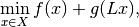
where  is a linear
is a linear Operator 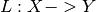,  and
and  are (discretized) function spaces and 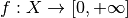 and 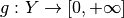 are proper, convex, lower semi-continuous functionals.
For more information on the mathematics, please see the mathematical background article on this method.
are (discretized) function spaces and 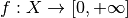 and 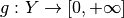 are proper, convex, lower semi-continuous functionals.
For more information on the mathematics, please see the mathematical background article on this method.
Using PDHG¶
There are several examples in the examples folder of ODL, including denoising, deblurring and tomography. Here, we will walk through the solution of a typical problem using the PDHG solver.
Mathematical problem setup¶
The problem we'll be looking at is the TV regularized denoising problem
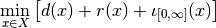
with 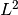 data discrepancy term for given data 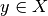,
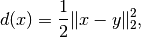
TV regularization term
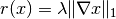
and positivity constraint enforced by the indicator function
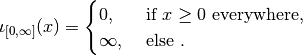
Here, 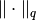 is the 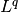 norm (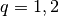), 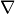 the spatial gradient, and  a regularization parameter.
a regularization parameter.
The standard way of fitting this problem into the PDHG framework is to summarize both data fit and regularization terms into the composition part 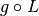 of the solver, and to set  to the positivity constraint 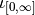.
By setting 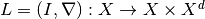, where 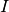 is the identity mapping on , we can write
to the positivity constraint 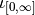.
By setting 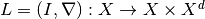, where 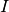 is the identity mapping on , we can write
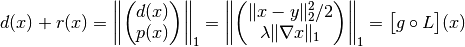
with the functional 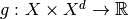 defined by
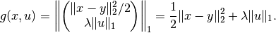
Note that the arguments 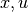 of  are independent, i.e. the sum of the two functionals is a
are independent, i.e. the sum of the two functionals is a SeparableSum.
Note
The operator maps to the ProductSpace 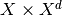.
Such a "one-to-many" type of mapping is also called BroadcastOperator.
Numerical solution using ODL¶
Now we implement a numerical solution to the above defined problem using PDHG in ODL.
Problem setup¶
The first step in the problem setup is the definition of the spaces in which we want to solve the problem. In this case, we use an space on the square 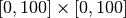. We choose 256 discretization points per axis:
>>> space = odl.uniform_discr(min_pt=[0, 0], max_pt=[100, 100], shape=[256, 256])
In real problems, the data  would be given by some measurement, but for the purpose of testing the solver, we generate data by creating a modified Shepp-Logan phantom and adding 10% Gaussian noise:
would be given by some measurement, but for the purpose of testing the solver, we generate data by creating a modified Shepp-Logan phantom and adding 10% Gaussian noise:
>>> phantom = odl.phantom.shepp_logan(space, modified=True)
>>> data = phantom + odl.phantom.white_noise(space) * 0.1
We now need to define the forward operator , which we do one constituent at a time:
>>> ident = odl.IdentityOperator(space)
>>> grad = odl.Gradient(space)
To create , we use the BroadcastOperator class as mentioned above:
>>> L = odl.BroadcastOperator(ident, grad)
We can now proceed to the problem specification.
This step requires us to specify the functionals and , where the latter is the SeparableSum of the squared distance to and the (vectorial) 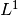 norm.
These functionals are available in ODL as L2NormSquared and L1Norm, respectively:
>>> l2_norm_squared = odl.solvers.L2NormSquared(space).translated(data)
>>> l1_norm = 0.0003 * odl.solvers.L1Norm(grad.range)
>>> g = odl.solvers.SeparableSum(l2_norm_squared, l1_norm)
Note
We don't need to take extra care of the norm being a vectorial norm since L1Norm also works on product spaces.
Finally, we define the functional for the nonnegativity constraint, available as the functional IndicatorNonnegativity:
>>> f = odl.solvers.IndicatorNonnegativity(space)
Calling the solver¶
Now that the problem is set up, we need to select some optimization parameters.
For PDHG, there is one main rule that we can use:
The product of the primal step  , the dual step
, the dual step  and the squared operator norm 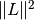 has to be smaller than 1, 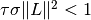.
Apart from this, there are no clear rules on how to select and -- basically we're left with trial and error.
We decide to pick them both equal to 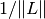.
To calculate an estimate of the operator norm, we have the tool
and the squared operator norm 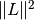 has to be smaller than 1, 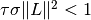.
Apart from this, there are no clear rules on how to select and -- basically we're left with trial and error.
We decide to pick them both equal to 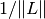.
To calculate an estimate of the operator norm, we have the tool power_method_opnorm which performs the simple power iteration to approximate the largest singular value of :
>>> op_norm = 1.1 * odl.power_method_opnorm(L, maxiter=4, xstart=phantom)
>>> tau = sigma = 1.0 / op_norm
Finally, we pick a starting point (zero) and run the algorithm:
>>> x = space.zero()
>>> odl.solvers.pdhg(x, f, g, L, tau=tau, sigma=sigma, niter=100)
Now we check the result after 100 iterations and compare it to the original:
>>> fig1 = phantom.show('phantom')
>>> fig2 = data.show('noisy data')
>>> fig3 = x.show('TV denoised result')
This yields the following images:
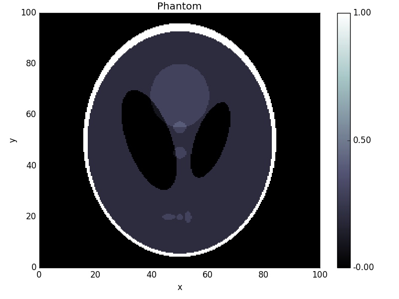 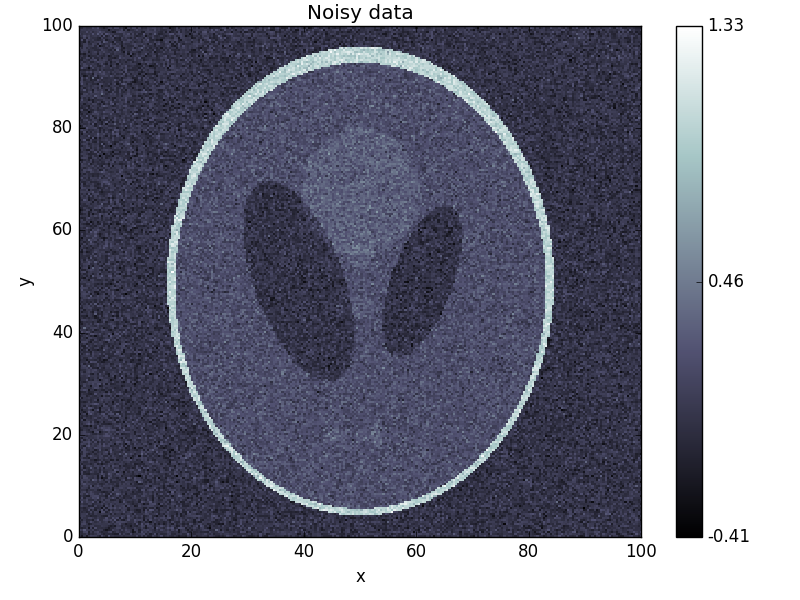